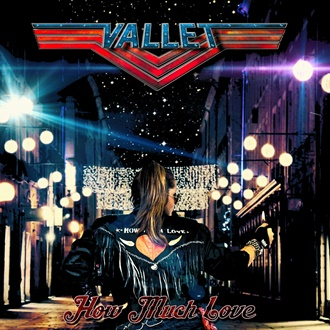
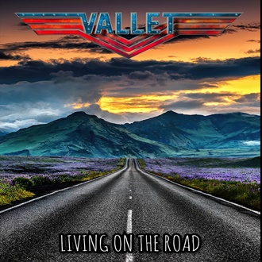

-
How Much Love
Descrição
How Much Love, primeiro single da banda lançado logo no início de 2016, mostra todo o lado romantico do Hard Rock oitentista do qual a banda conseguiu trazer de volta com muito vigor e maestria. A balada conquistou ouvintes e radios no mundo inteiro, consagrando a banda brasileira como um forte expoente no cenario musical mundial.
-
Living on the Road
Descrição
Living on the Road, segundo single da banda lançado no final de 2016. Este som, considerado o favorito por muitos fãs, mostra um lado mais agitado da banda com um aclamado videoclipe sobre como é viver na estrada e nunca desistir de seus objetivos, seguindo sempre adiante e nunca olhando para tras. A cena final e o sax coroaram a musica e consolidaram de vez a Vallet como um grande expoente mundial .
-
Never Let it Say Goodbye

Descrição
Never Let it Say Goodbye, terceiro single da aclamada banda lançado em 2019. Com um excelente e vibrante videoclipe, a banda apostou mais uma vez no sax e acertou em cheio. A musica cujo titulo pode ter propositalmente dois sentidos, fala sobre memorias douradas e bons momentos dos quais devemos manter sempre vivos para que novas memorias sejam criadas. Trechos na praia, predios antigos, visuais deslumbrantes nos remetem à nostalgia em geral são muito bem representadas nesse video.